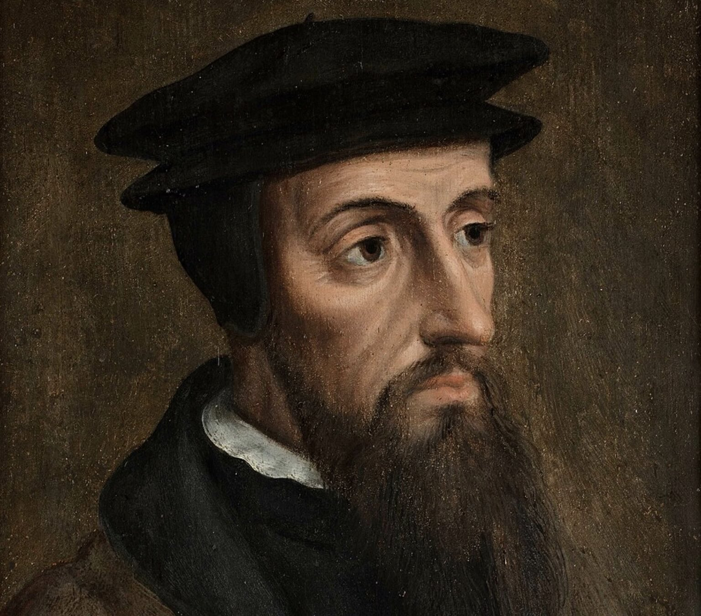

Calvin's Theology of Unanswered Prayer
February 1, 2026

This was a final paper for a class on Calvin and the Reformed Tradition taught by Dr. Shawn Wright at SBTS.
The question of unanswered prayer is a perennial one that is faced by all believers at some point or another. Scripture seems to offer, in many places, unconditional promises that whatever we ask of the Father will be given to us. For example, Jesus says in Mark 11:24: “whatever you ask in prayer, believe that you have received it, and it will be yours” (ESV). In John 16:23, he says, “whatever you ask the Father in my name, he will give it to you.” However, the common experience of believers is that many prayers actually go unanswered by God. For example, we may pray for the salvation of non-believing friends, who ultimately end up dying without Christ. Such requests are guaranteed to go unanswered by God, because there is no possibility of salvation after death. This seems to be clarified by 1 John 5:14, which adds the condition that we must ask according to God’s will. However, this only introduces more questions. If John refers to God’s
preceptive will, then the experience of unanswered prayer seems to disprove this statement. If John refers to God’s
decretive will, which is guaranteed to happen, then it seems that prayer is useless—that is, the only answered prayers are those that were already going to happen anyways.
Calvin was a theologian deeply interested in the matter of prayer. His chapter on prayer in his
Institutes is one of the longest.[
1] However, because he was also very committed to the certainty of God’s will, given his high view of providence, it is very helpful for us to seek to comprehend his understanding of the relationship between God’s will and unanswered prayer. In this paper, I will show that Calvin’s theology of God’s meticulous sovereignty, God’s fatherhood, and the role of faith in the life of the believer all come together as he addresses the question of why godly prayers made in faith go unanswered. Through his
Institutes, his commentaries, and his sermons, I will show how Calvin teaches that unanswered prayers should cause believers to examine the content of their prayers, persevere in faith, and lean upon the “indirect disagreements” of their requests with the will of God.
The Proper Content of Prayer
Calvin emphasizes, in line with Scripture, that the nature of what we pray for matters to God. God is not pleased to answer those prayers that are against his will. In his
Institutes, he teaches that even though we are encouraged to pour out our hearts before God, we must also not allow our emotions to reign over our prayers. We sin when we make requests of God according to our improprieties and “impudently present before his throne whatever in dreams has struck [our] fancy.” We must subject our wishes to God’s power and bridle.[
2] At the same time, he does concede that, in reality, the prayers of the saints are a “mixture of faith and error,” and that, despite this, they are not nullified. However, these prayers are not meant to be examples for us.[
3]
He makes this point repeatedly in his commentaries as well. Commenting on Christ’s prayer in Gethsemane, he says, “if even Christ was under the necessity of holding his will captive, in order to subject it to the government of God, . . . how carefully ought we to repress the violence of our feelings, which are always inconsiderate, and rash, and full of rebellion?”[
4] Commenting on John 15:7, he writes, “[God] does not give us leave to form wishes according to our own fancy. . . . he limits the wishes of his people to the rule of praying in a right manner.”[
5] Commenting on 1 John 5:14–15, one of the most important passages concerning this idea of asking according to the will of God, Calvin writes that God has “prescribed to [his people] a low according to which they are to pray.” This is because it would be very bad if God were to grant all of our wishes.[
6] Looking towards the prayers of the psalmists, Calvin makes this observation in several places. Commenting on Psalm 89:47, Calvin notes that saints must “keep themselves within the bounds of modesty, and, restraining the impetuosity of their affections, yield themselves wholly to his will.” At the same time, there is grace when this rule is not followed, because our prayers naturally “proceed not from a settled and an undisturbed state of mind.”[
7] On Psalm 145:18, Calvin writes, “we have not a license of universal appetency, as if [God’s] people might frowardly clamour for whatever their corrupt desires listed, but before God says that he will hear their prayers, he enjoins the law of moderation and submission upon their affections.”[
8] Christians must pay close attention to what they pray for, if they are to have their prayers heard and answered.
The Spirit and the Word are essential components of Calvin’s theology, and that is no less true when it comes to his theology of prayer. The Spirit and the Word are the powers that enable us to pray rightly, with our passions appropriately bridled. In the
Institutes, Calvin writes, with reference to Romans 8:26, that “God gives us the Spirit as our teacher in prayer, to tell us what is right and temper our emotions.”[
9] Calvin describes the Spirit and the Word as a “twofold remedy,” where “he teaches us by his word what he would have us to ask, and he has also set over us his Spirit as our guide and ruler, to restrain our feelings.”[
10] It is the Word that determines the rule of our prayer, and it is the Spirit that enables us to abide by that rule.
The topic of praying according to the will of God raises an important question: does this refer to God’s decretive will, or to his preceptive will? As mentioned in the introduction, if this refers to God’s secret will of decree, then it seems that either prayer is superfluous or that it is impossible to know what to rightly pray for, given the unknowability of God’s decretive will. Calvin does not seem to offer a clear answer on this point. It is unclear whether he even makes a distinction between God’s decretive and preceptive wills in his writings. On the one hand, in his discussion of the will of God in the Lord’s Prayer, he does seem to make this distinction: “Here [in the Lord’s Prayer] it is not a question of [God’s] secret will, by which he controls all things and directs them to their end. . . . here God’s other will is to be noted—namely, that to which voluntary obedience corresponds.”[
11] On the other hand, in another part of the
Institutes, Calvin seems to insist on the
unity of God’s will despite the apparent discord between God’s secret and revealed will. He opposes those who claim that God must have “two contrary wills, . . . [decreeing] what he has openly forbidden by his law.” Instead, he teaches that God’s will is “one and simple,” appearing “manifold to us . . . on account of our mental incapacity.”[
12] Given this lack of distinction, it seems that Calvin generally understands God’s will to refer to God’s secret will of decree. In the
Institutes, Calvin notes that the saints in Scripture sometimes “seek from God what is against his decree” and that God does not nullify these prayers, and yet Calvin adds that this is not “a valid example for imitation” and that “they exceeded due measure.” He reminds the reader that “where no certain promise shows itself, we must ask of God conditionally.”[
13] In similar fashion, when commenting on Paul’s prayer in 2 Corinthians 12:8, Calvin enjoins:
We ask in simple terms those things as to which we have an express promise—as, for example, the perfecting of God’s kingdom, and the hallowing of his name, the remission of our sins, and every thing that is advantageous to us; but, when we think that the kingdom of God can, nay must be advanced, in this particular manner, or in that, and that this thing, or that, is necessary for the hallowing of his name, we are often mistaken in our opinion. . . . Hence we ask those former things confidently, and without any reservation, while it does not belong to us to prescribe the means. If, however, we specify the means, there is always a condition implied, though not expressed.[
14]
And again, commenting on Jesus’ prayer in Gethsemane, Calvin says, “when we have no certain and special promise, we ought to abide by this rule, not to ask any thing but on the condition that God shall fulfil what he has decreed.”[
15] Commenting on 1 John 5:14–15, one of the most significant texts regarding this question, Calvin writes, “God in his promises has fixed for us, as it has been said, the right way of praying.”[
16] I will discuss this topic further in the third section, but for now, it suffices to conclude that Calvin would have believers to pray according to God’s will of decree, which means that prayers must be made according to explicit promises found in the Scriptures. Prayers that are more specific are permitted and certainly heard, but they must be made conditionally with deference to God’s decree.
Whether this makes prayer superfluous is beyond the scope of this paper, but the answer is no, as has been argued elsewhere.[
17] God ordains prayer as a means for carrying out his decree and, as Calvin reminds us, God ordained prayer “not so much for his own sake as for ours.”[
18]
Faith and Perseverance in Prayer
A second reason that prayer goes unanswered has more to do with the faith behind the prayer. Calvin called prayer the “chief exercise of faith.” The gospel produces faith, and this faith leads us to call upon God as Father and to seek his benefits through prayer.
Calvin writes that to have faith in prayer means “to expect, and to be fully assured of obtaining, from God whatever we need.”[
19] Without faith, prayer is “an idle and unmeaning ceremony.”[
20] Calvin especially refuted the Catholic doctrine that prayers should be made with doubt and uncertainty as to God’s answer, going so far as to say that “our prayers are not heard by the Lord, except when we have a confidence that we shall obtain.”[
21] Fruitful prayers must “grasp with both hands this assurance of obtaining what we ask.”[
22] At the same time, this sense of assurance in prayer should not encourage slothfulness in prayer, but it should generate a sense of tranquility in a person after having cast his burdens onto the Lord and “deposited his sighs in the bosom of God.”[
23]
Calvin also teaches that God sometimes rebuffs our prayers in order to encourage us to ask with greater faith and persistence. Our unanswered prayers should lead us not to despair but to perseverance. Commenting on the repetition of Christ’s prayers in Gethsemane, Calvin notes that this example teaches us that, based on Christ’s example, it is not superfluous repetition when “we ask a third and fourth time what God appears to have denied.”[
24] Commenting on the example of the Canaanite woman in Matthew 15:23, Calvin interprets the silence of Jesus as being meant “not to extinguish the woman’s faith, but rather to whet her zeal and inflame her ardour.”[
25] There is even a sense in which the faith that responds to unanswered prayer actually brings God glory. On Daniel, Calvin writes that “the saints are said to please God by their sometimes failing to obtain their requests.” Calvin reminds us that we must be patient when our prayers go unanswered, because God may hear us and yet choose to answer us even after our deaths: “when we become anxious in our thoughts, and are induced to despair through the absence of all profit or fruit from our prayers,” we must remember that “Daniel, who was most acceptable to God, was heard at length, without being permitted to see the object of his wishes with his bodily eyes.”[
26] Returning to Christ’s prayers in Gethsemane, Calvin once remarked in a sermon:
Those who lose courage when our God does not respond to their first wish show that they do not know what it is to pray. For the certain rule for finding our refuge in God involves perseverance. Thus it is that the principal exercise of our faith is prayer. Now faith cannot exist without waiting. It is not possible for God to humor us as soon as we have opened our mouths and formed the request. But it is needful that He delay and that He let us languish oftentimes so that we may know what it is to call upon Him sincerely and without pretense, so that we may declare that our faith is so founded upon the Word of God that it checks us as a bridle so that we may be patient to endure until the opportune time to help us shall have come.[
27]
Finally, what is the ground of this faith that drives such petitionary prayer? Going back to the ideas from the first section, it is the certainty of the promises found in the Word of God that provides the assurance required for true prayer. Without the Word as a rule to guide the content of prayer, there would be no certainty in prayer. Calvin reminds us that faith “penetrates into the treasures of the grace of God, which are held out to us in the word.” He continues, “Christ demands a firm and undoubting confidence of obtaining an answer; and whence does the human mind obtain that confidence but from the word of God?” [
28] The Word of God not only instills in us the assurance that God is our Father who hears us, but it also delineates the exact promises that believers are encouraged to grasp onto and center their prayers upon.
The “Indirect Disagreements” between Our Prayers and God’s Will
Although I have touched on them previously, Calvin’s comments on Christ’s prayer in Gethsemane have rich implications for the topic of unanswered prayer that should be explored further. He offers unique reflections on how saints can offer prayers that are holy and yet opposed to God’s decree, and he asks how these can ultimately cohere with one another. I will devote this section to piecing together his insights on that passage with his broader theology of prayer.
First, Calvin argues, correctly, that this passage demonstrates the two wills in Christ, against Monothelitism. Christ had both a divine will and a human will, and his human will submitted in obedience to the divine will of his Father.[
29] However, if we allow for this dual will in Christ, how is it possible for Christ to pray
against the eternal decree of God? Calvin is quite clear that the decree of God is immutable: it is “utterly impossible for God to revoke his decree.” Calvin then lists several examples of saints in Scripture who are “carried away hastily by the earnestness of their wishes,” such as Moses, who prayed that he might be blotted out of the book of lfie (Ex 32:32), and Paul, who wished to be accursed and cut off from Christ for the sake of his brothers (Rom 9:3). For Christ, the strength of his grief apparently “took away from him the immediate recollection of the heavenly decree.”
The obvious question is how Christ’s human will could remain good if it did not agree with the will of God, which is “the only rule of what is good and right.” While one might expect Calvin to make a distinction here between the decretive and preceptive wills of God, he does not. Instead, he argues that
there is a certain kind of indirect disagreement with [the good pleasure of God] which is not faulty, and is not reckoned as sin; if, for example, a person desire to see the Church in a calm and flourishing condition, if he wish that the children of God were delivered from afflictions, that all superstitions were removed out of the world, and that the rage of wicked men were so restrained as to do no injury. These things, being in themselves right, may properly be desired by believers, though it may please God to order a different state of matters: for he chooses that his Son should reign among enemies; that his people should be trained under the cross; and that the triumph of faith and of the Gospel should be rendered more illustrious by the opposing machinations of Satan. We see how those prayers are holy, which appear to be contrary to the will of God; for God does not desire us to be always exact or scrupulous in inquiring what he has appointed, but allows us to ask what is desirable according to the capacity of our senses.[
30]
Calvin continues by insisting upon the harmony between the human will of Christ and the divine will of the Father with this interesting illustration:
Nay more, as musical sounds, though various and differing from each other, are so far from being discordant, that they produce sweet melody and fine harmony; so in Christ there was a remarkable example of adaptation between the two wills, the will of God and the will of man, so that they differed from each other without any conflict or opposition.[
31]
These are moving passages, but they raise the question of whether this is consistent with what has been previously highlighted—that Calvin would have believers pray according to God’s will of decree and the specific promises guaranteed in Scripture. Most likely, the solution should be found in Calvin’s differentiation between what can be prayed unconditionally (those things that are specifically promised in God’s Word) and what can only be prayed conditionally (those good and desirable things that are not specifically promised in God’s Word). Christ’s prayer in Gethsemane was an example of a conditional prayer that, though at odds with God’s decree, is still worthy of our emulation.
If I were to summarize Calvin’s position, it would be this: In prayer, we should be discerning when we make requests, so that we are not those who ask wrongly to spend on our own passions (Jas 4:3). On the other hand, we should feel free to ask liberally of God our Father, knowing that our prayers are heard even when they are a “mixture of faith and error” due to our finitude. At the same time, we should know how to distinguish between those things that are explicitly promised to us and those things that are only specific means towards those ends, which God may choose to accomplish differently. Nevertheless, the “indirect disagreements” between our desires and God’s decree do not mean that our prayers are unholy, but rather that there is a kind of mysterious harmony between the different expressions of God’s manifold will.
Conclusion
In this paper, I have sought to show that Calvin’s theology of prayer, especially pertaining to the experience of unanswered prayer, brings together his theology of God’s will and decree, God’s fatherhood, and the role of faith in the Christian life. He is able to explain the Christian experience of unanswered prayer in different ways, whether that is the need to bring the proper requests before God, the need to pray with faith and perseverance, or simply the complexity of knowing God’s plan and purposes. In doing so, he is careful to uphold both the certainty of God’s fatherly promise to answer prayer and the immutability and inscrutability of God’s will of decree. All told, this is a call for believers to pray with more discernment, more confidence, more diligence, and more persistence.